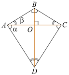

Решение пункта а)
Рассмотрим треугольники $\triangle ABO$ и $\triangle COD$: углы $\angle ABD$ и $\angle BDC$ при секущей $BD$ не равны. Тогда, так как треугольники $\triangle ABO$ и $\triangle COD$ подобны, углы $\angle ABO$ и $\angle DCO$, а также $\angle BAO$ и $\angle CDO$ равны. Аналогично для треугольников $\triangle AOD$ и $\triangle BDC$. Сумма углов $\angle ABO$ и $\angle DCO$ равна $90^\circ$, следовательно, конфигурацию можно представить приведённым рисунком.
Заметим, что $\overset{\frown}{ABD} = \overset{\frown}{ACD}$, следовательно, вокруг четырёхугольника $ABCD$ можно описать окружность.
Решение пункта б)
Пусть $BO = a$, $OC = b$, тогда:
$$ OD = OC \cdot \frac{b}{a} = \frac{b^2}{a} $$ $$ BO = OA \cdot \frac{AO}{OD} \Rightarrow a = \frac{AO^2}{b^2} \Rightarrow AO = b $$Из этого следует: $AO = OC = 5$.
Пусть $OB = x$, тогда:
$$ \frac{25}{x} = 26 - x, \quad x > 0 $$ $$ x^2 - 26x + 25 = 0 \Rightarrow \begin{cases} x = 1 \\ x = 25 \end{cases} $$Пусть $OB = 1$, $OD = 25$.
$$ AB = BC = \sqrt{26} $$ $$ AD = DC = 5\sqrt{26} $$Полупериметр:
$$ p_{ABCD} = 6\sqrt{26} $$Площадь:
$$ S_{ABCD} = 130 $$Радиус:
$$ r = \frac{130}{6\sqrt{26}} = \frac{5\sqrt{26}}{6} $$Если рассмотреть другую конфигурацию:
$$ x^2 - 5x + 169 = 0 $$Корней нет → конфигурация невозможна.
Ответ: $\frac{5\sqrt{26}}{6}$